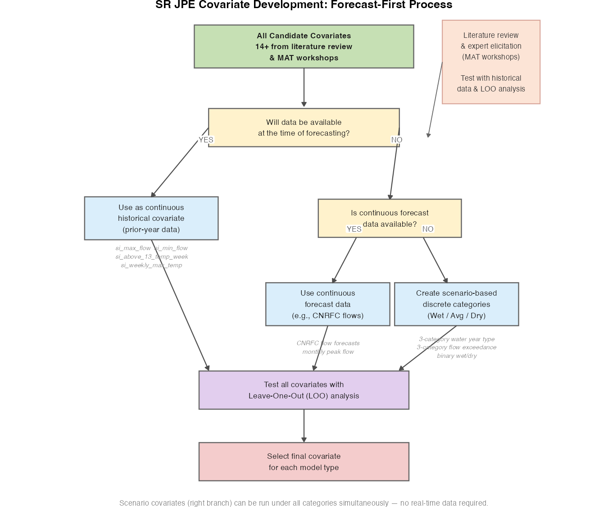
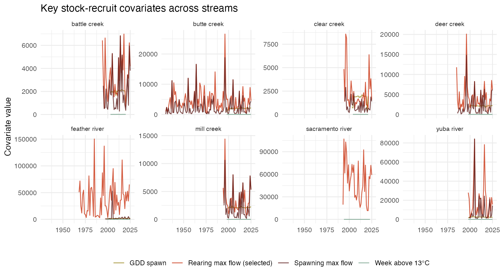

covariate_overview.RmdEnvironmental covariates are used throughout the Spring Run Juvenile Production Estimate (SR JPE) model suite to better capture the influence of physical habitat conditions on salmon population dynamics. This document provides a comprehensive summary of:
Detailed methods for covariate preparation can be found in two companion vignettes:
The table below lists every covariate explored across SR JPE model types, the models in which each was tested, manuscript/documentation references, and whether it was selected for the final integrated model.
|
Model Use
|
||||||||
|---|---|---|---|---|---|---|---|---|
| Covariate | Type | Time Period | Stock-Recruit | P2S | Survival | Juv. Abundance | Forecast Available | Documentation |
| Degree days (spawning/incubation) | Temperature | Aug–Dec | Tested | — | — | — | Yes (historical) | [SR Covariates](sr_cov |
| Week 7DADM > 13°C | Temperature | Mar–Dec | Tested | — | — | — | Yes (historical) | [SR Covariates](sr_cov |
| Day 7DADM > 13°C | Temperature | Mar–Dec | Tested | — | — | — | Yes (historical) | [SR Covariates](sr_cov |
| Max weekly temperature (max) | Temperature | Aug–Dec | Tested | — | — | — | Yes (historical) | [SR Covariates](sr_cov |
| Max weekly temperature (mean) | Temperature | Aug–Dec | Tested | — | — | — | Yes (historical) | [SR Covariates](sr_cov |
| Max weekly temperature (median) | Temperature | Aug–Dec | Tested | — | — | — | Yes (historical) | [SR Covariates](sr_cov |
| Degree days Sacramento (GDD base 20°C) | Temperature | Mar–May | Tested | — | — | — | Yes (historical) | [SR Covariates](sr_cov |
| Growing degree days (GDD base 20°C) | Temperature | May–Aug (tribs) | — | Tested | — | — | No | [Forecast Covariates]( |
| Emergence date (in development) | Temperature | Spawn date + | Proposed | — | — | — | Uncertain | [SR Covariates](sr_cov |
| Mean flow (spawning) | Flow | Aug–Dec | Tested | — | — | — | Yes (historical) | [SR Covariates](sr_cov |
| Max flow (spawning) | Flow | Aug–Dec | Tested | Tested | — | — | Yes (historical) | [SR Covariates](sr_cov |
| Min flow (spawning) | Flow | Aug–Dec | Tested | — | — | — | Yes (historical) | [Forecast Covariates]( |
| Median flow (spawning) | Flow | Aug–Dec | Tested | — | — | — | Yes (historical) | [SR Covariates](sr_cov |
| Mean flow (rearing) | Flow | Nov–Jul (tribs) | Tested | — | — | — | No | [SR Covariates](sr_cov |
| Max flow (rearing) | Flow | Nov–Jul (tribs) | Selected | — | — | — | No | [SR Covariates](sr_cov |
| Min flow (rearing) | Flow | Nov–Jul (tribs) | Tested | — | — | — | No | [SR Covariates](sr_cov |
| Median flow (rearing) | Flow | Nov–Jul (tribs) | Tested | — | — | — | No | [SR Covariates](sr_cov |
| Max flow (standardized) | Flow | Migration period | — | Selected | Selected | Selected | Yes | [Forecast Covariates]( |
| Monthly peak flow | Flow | By month | — | — | — | — | Yes | [Forecast Covariates]( |
| Monthly reservoir storage (Keswick) | Reservoir | Dec–Mar | — | — | — | — | Yes | [Forecast Covariates]( |
| Monthly reservoir storage (Shasta) | Reservoir | Dec–Mar | — | — | — | — | Yes | [Forecast Covariates]( |
| Water year type (3-category, CDEC) | Categorical | Annual | — | — | — | — | Yes (scenario) | [Forecast Covariates]( |
| Flow exceedance year type (3-category) | Categorical | Annual | — | — | — | — | Yes (scenario) | [Forecast Covariates]( |
| Water year type (binary: wet/dry) | Categorical | Annual | — | Selected | — | — | Yes (scenario) | [Forecast Covariates]( |
| Fork length | Biological | At capture | — | — | Selected | — | Yes | Acoustic Tagging Data |
Rows highlighted in green indicate covariates that are selected in at least one final model. “Tested” indicates the covariate was explored but not selected as the primary covariate. “—” indicates the covariate was not applicable to that model type.
Covariate selection began with a literature review and input from the SR JPE Modeling Advisory Team (MAT). The goal was to identify environmental drivers expected to influence spring run Chinook salmon survival, growth, and reproductive success based on known biological mechanisms. The candidate covariate list and supporting literature can be found in the FlowWest covariate planning spreadsheet.
Key ecological relationships motivating covariate selection:
Candidate covariates were tested within each model using leave-one-out (LOO) cross-validation. LOO analysis holds out one brood year at a time and evaluates how well the model predicts that year using the remaining data. This approach was used to:
Temperature covariates were developed for the spawning/incubation period (Aug–Dec in tributaries) and the adult migration period (Mar–May in the Sacramento River mainstem). All temperature data come from USGS, CDEC, and USFWS gages; gaps are filled with rolling 3-day means or monthly means.
| Variable Name | Period | Description |
|---|---|---|
si_gdd_spawn
|
Aug–Dec | Sum of daily mean temperatures during spawning/incubation. Missing values filled with rolling 3-day mean or monthly mean. Sensitive to gaps in temperature records. |
si_above_13_temp_day
|
Mar–Dec | Day of year when the 7-day average daily maximum (7DADM) temperature first exceeds 13°C. Adults are not in tributaries in Jan–Feb so those months are excluded. 13°C is the recognized upper limit for spring run spawning. |
si_above_13_temp_week
|
Mar–Dec | Same as above, expressed as week of year rather than day of year. |
si_weekly_max_temp_max
|
Aug–Dec | Maximum of weekly maximum temperatures across the spawning period. Captures peak thermal stress events. |
si_weekly_max_temp_mean
|
Aug–Dec | Mean of weekly maximum temperatures. Captures average thermal conditions during spawning. |
si_weekly_max_temp_median
|
Aug–Dec | Median of weekly maximum temperatures. More robust to outlier temperature events. |
gdd_sacramento
|
Mar–May | Sum of degree days above 20°C at Knights Landing on the Sacramento River. Used as a proxy for adult migration thermal stress causing prespawn mortality. Based on NOAA (2018) and journal.pone.0204274. |
gdd_std (P2S)
|
May–Aug (tribs) | Growing degree days above 20°C during the adult holding period (tributaries). Standardized (z-scored) within streams. Used in the Passage-to-Spawner model. |
| Emergence date (proposed) | Spawn date + | Modeled emergence date following Kaylor et al. 2022. Daily Ei values summed from spawn date; emergence assumed when cumulative Ei ≥ 1. In development. |
Flow covariates were developed for the spawning/incubation period (Aug–Dec) and the juvenile rearing period (Nov–Jul for tributaries; Jan–Jul for the Sacramento River). Daily maximum flows are used to capture peak flow conditions. All data come from USGS and CDEC gages.
| Variable Name | Period | Description |
|---|---|---|
si_mean_flow
|
Aug–Dec | Mean of daily maximum flows during the spawning/incubation period. |
si_max_flow
|
Aug–Dec | Maximum daily flow during the spawning/incubation period. Used in forecast models and P2S model (standardized). |
si_min_flow
|
Aug–Dec | Minimum daily flow during the spawning/incubation period. Used in forecast models as an indicator of low-flow stress. |
si_median_flow
|
Aug–Dec | Median daily flow during the spawning/incubation period. |
rr_mean_flow
|
Nov–Jul (tribs); Jan–Jul (Sac) | Mean of daily maximum flows during the juvenile rearing period. |
rr_max_flow
|
Nov–Jul (tribs); Jan–Jul (Sac) | Maximum daily flow during the rearing period. Selected covariate in the stock-recruit model. Captures peak flow events important for juvenile transport and habitat availability. |
rr_min_flow
|
Nov–Jul (tribs); Jan–Jul (Sac) | Minimum daily flow during the rearing period. |
rr_median_flow
|
Nov–Jul (tribs); Jan–Jul (Sac) | Median daily flow during the rearing period. |
| Monthly peak flow | By month and watershed | Maximum of mean daily flows by month, year, and stream. Used in forecast models as a forward-looking flow indicator. |
max_flow_std
|
Migration/holding period | Standardized (z-scored) maximum flow within streams. Used in the Passage-to-Spawner model and survival model. |
Categorical covariates do not require a specific forecast; all scenario categories (e.g., wet, average, dry) are run simultaneously. This makes them particularly valuable for scenario planning.
| Variable Name | Source | Categories | Description |
|---|---|---|---|
| 3-category water year type | CDEC Sacramento Valley | C | D/BN/AN | W | Annual hydrologic classification from California DWR, aggregated to 3 categories: Critical (C), Dry/Below Normal/Above Normal (D/BN/AN), and Wet (W). Applied statewide. |
| 3-category flow exceedance year type | USGS stream gages | Wet | Average | Dry | Stream-specific water year type based on CDFW Instream Flow Program methodology (CDFW-IFP-005). Ranks water years by mean annual discharge: top 33% = Wet, middle 33% = Average, bottom 33% = Dry. |
| Water year type (binary: wet/dry) | CDEC + waterYearType R package | Wet (1) | Dry (0) | Simplified binary classification used in the Passage-to-Spawner model. Wet = Wet + Above Normal; Dry = Dry + Below Normal + Critical. Standardized for use in Stan models. |
Reservoir storage in Shasta and Keswick Reservoirs integrates upstream water management and provides an early-season indicator of downstream flow conditions. These data are particularly useful for forecasting because they are reported in real time.
| Variable Name | Source | Period | Description |
|---|---|---|---|
| Monthly Keswick storage | CDEC (KES), sensor 15, monthly | Dec–Mar | Monthly average storage volume (acre-feet) for Keswick Reservoir. Available from 1965 onward. Applied to all streams (not stream-specific). |
| Monthly Shasta storage | USGS (11370000), instantaneous at midnight | Dec–Mar | Monthly average storage volume (acre-feet) for Shasta Reservoir. Applied to all streams. |
A key design decision in the SR JPE model system is whether to use covariates derived from historical observations or adapted for forecast and scenario applications. This section explains the reasoning behind the forecast-first approach.
Many of the strongest-performing covariates in historical stock-recruit modeling — such as rearing-period maximum flow (Nov–Jul) — are not available at the time of forecasting because the rearing season has not yet concluded. An annual JPE forecast must be produced early in the calendar year (e.g., January), before the rearing season ends in July.
This creates a fundamental trade-off:
| Approach | Advantage | Limitation |
|---|---|---|
| Historical covariate (e.g., rearing max flow) | High ecological relevance; best LOO performance | Not available at forecast time |
| Continuous forecast covariate (e.g., min/max spawning flow) | Available at forecast time; uses actual observed data | May have lower predictive accuracy |
| Scenario covariate (e.g., 3-category year type) | Always available; enables scenario planning | Coarser signal; does not capture within-category variation |
The SR JPE is intended to provide an operational forecast of annual spring run Chinook juvenile production before the outmigration season is complete. The modeling team therefore favors covariates that:
The diagram below illustrates the updated decision framework for
covariate development — starting from forecast availability as the
primary consideration. To regenerate the diagram, run
data-raw/create_covariate_diagram.R.

The stock-recruit model estimates annual juvenile production (recruits) as a function of adult spawner abundance (stock). Environmental covariates modify the productivity parameter, allowing the model to account for inter-annual variation in habitat conditions.
Data:
SRJPEdata::stock_recruit_covariates and
SRJPEdata::stock_recruit_model_inputs
Covariates tested:
All 14 temperature and flow covariates in
stock_recruit_covariates were tested individually using LOO
analysis. Covariates are compared against a null (no-covariate)
model.
Final selected covariate:
rearing_max_flow — maximum flow during the juvenile rearing
period (Nov–Jul). This covariate showed the most consistent positive
relationship with recruit-per-spawner ratios across streams and
years.
Forecast note: Rearing-period maximum flow is not available at the time of a January forecast because the rearing season extends through July. In the forecast model, this covariate is replaced by spawning/incubation flow metrics (si_max_flow, si_min_flow) or scenario-based water year type.

The P2S model estimates the fraction of upstream-counted adults that arrive as spawners, accounting for prespawn mortality. Environmental covariates represent thermal and hydrological stressors during the adult migration and holding period.
Data:
SRJPEdata::p2s_model_covariates_standard
Format:
year | stream | wy_type | max_flow_std | gdd_stdCovariates tested and final selection:
| Covariate | Description | Status |
|---|---|---|
wy_type |
Binary water year type (1 = wet, 0 = dry) | Selected |
max_flow_std |
Standardized maximum flow (z-score within streams) | Selected |
gdd_std |
Standardized GDD (base 20°C, May–Aug) | Selected |
| Null | No environmental effect | Comparison model |
All three covariates are run as alternatives. Continuous variables are z-scored within each stream to enable comparison across watersheds with different flow magnitudes.
| year | stream | wy_type | max_flow_std | gdd_std |
|---|---|---|---|---|
| 1991 | battle creek | 0 | -0.7672214 | NA |
| 1992 | battle creek | 0 | -1.1672905 | NA |
| 1993 | battle creek | 1 | 0.5574045 | NA |
| 1994 | battle creek | 0 | -0.9567984 | NA |
| 1995 | battle creek | 1 | 2.5993126 | NA |
| 1996 | battle creek | 1 | 0.3662186 | NA |
| 1997 | battle creek | 1 | -0.8992370 | NA |
| 1998 | battle creek | 1 | 1.8943649 | NA |
| 1999 | battle creek | 1 | 0.5624992 | NA |
| 2000 | battle creek | 1 | 0.3249246 | NA |
| 2001 | battle creek | 0 | -0.8321119 | NA |
| 2002 | battle creek | 0 | -0.9299841 | NA |
| 2003 | battle creek | 1 | 0.2318790 | -0.6810584 |
| 2004 | battle creek | 0 | 0.1559946 | -0.6810584 |
| 2005 | battle creek | 1 | 0.1117510 | -0.6176089 |
The survival model estimates reach-specific survival and travel time for acoustic-tagged juvenile salmon migrating through the Sacramento River mainstem. Covariates operate at the individual fish level and the reach level.
Data: Acoustic tagging data (ERDDAP / Central Valley Enhanced Acoustic Tagging Project)
Covariates tested and final selection:
| Covariate | Level | Status |
|---|---|---|
| Fork length | Individual fish | Selected — size strongly predicts survival and travel time |
| Max flow (standardized) | Reach-level, by tributary | Selected — flow affects survival rate by reach |
| Water year type (3-category) | Annual | Tested as alternative |
The final Stan model (survival_CovIndCont.stan)
estimates a reach-specific flow effect (S_bCov) and a
fork-length effect on both survival (S_bSz) and travel time
(T_bSz). Flow values are standardized within the historical
distribution for each tributary.
Forecast note: Max flow for the migration season is available in real time, making this covariate suitable for in-season use. Fork length is observed at the RST prior to acoustic tagging.
The juvenile abundance model estimates capture probability at rotary screw traps. Environmental covariates affect trap efficiency.
Covariate used: Standardized flow at the trap site
(b_flow)
Flow affects capture probability because higher discharge increases the proportion of migrating fish passing through the trap’s sampling cross-section. Flow data come from USGS gages co-located with each trap site.
Final selection: Standardized flow is the primary
covariate in both the tributary (pCap_all.stan) and
mainstem (pCap_mainstem.stan) models.
The in-season model tracks juvenile salmon abundance through the season using a state-space framework. An optional early-season flow covariate affects the population growth rate (λ) and immigration rate (φ).
Covariate: Early-season maximum flow (optional)
This covariate is standardized and can be included or excluded depending on data availability. When included, it allows the model to update abundance estimates based on real-time flow conditions.
| Model | Final Covariate(s) | Type | Available at Forecast? |
|---|---|---|---|
| Stock-Recruit (historical) |
rearing_max_flow
|
Flow | No (rearing season not complete) |
| Stock-Recruit (forecast) |
si_max_flow, si_min_flow, or 3-category water
year type
|
|Flow / Categorical | |Yes |
| Passage-to-Spawner |
wy_type (binary), max_flow_std, or
gdd_std
|
Categorical / Flow / Temperature | Yes |
| Survival |
Fork length + max_flow_std (reach-level)
|
Biological + Flow | Yes (real-time) |
| Juvenile Abundance |
Standardized flow (b_flow)
|
Flow | Yes (real-time) |
| In-Season Forecast | Early-season max flow (optional) | Flow | Yes (real-time) |
All covariate datasets are available from the SRJPEdata
package:
| Dataset | Description | Access |
|---|---|---|
stock_recruit_covariates |
Temperature and flow covariates for historical SR modeling (14 structures × 8 streams) | SRJPEdata::stock_recruit_covariates |
forecast_covariates |
Covariates adapted for forecast and scenario models | SRJPEdata::forecast_covariates |
p2s_model_covariates_standard |
Standardized covariates for the P2S model | SRJPEdata::p2s_model_covariates_standard |
environmental_data |
Raw daily flow and temperature data (base for all covariates) | SRJPEdata::environmental_data |
The raw covariate definitions table is maintained at
data-raw/helper-tables/covariate_definitions.csv.